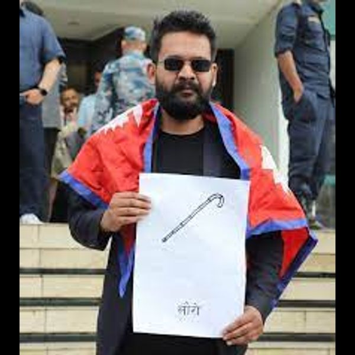

वालेन्द्र साह
स्वतन्त्र
प्राप्त मत:
३८३४
बालेन, मेयर पदका प्रत्यासी, काठमाडौं महानगरपालिका

वालेन्द्र साह
स्वतन्त्र
बालेन, मेयर पदका प्रत्यासी, काठमाडौं महानगरपालिका
केशव स्थापित
नेपाल कम्युनिष्ट पार्टी (एमाले)
केशव स्थापित, काठमाडौं महानगरपालिका मेयरका उम्मेदवार

सिर्जना सिंह
नेपाली कांग्रेस
सिर्जना सिंह, मेयरका प्रत्यासी, काठमाडौं महानगर